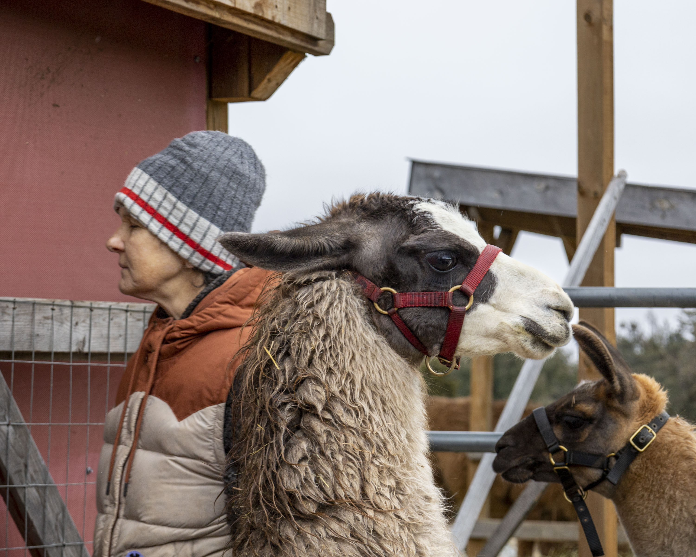
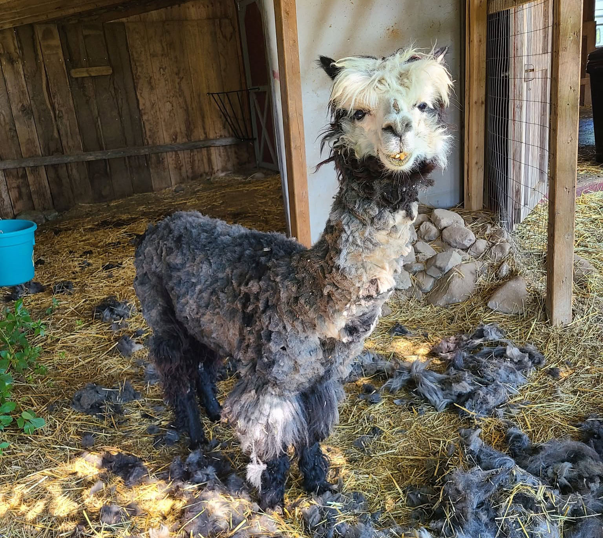
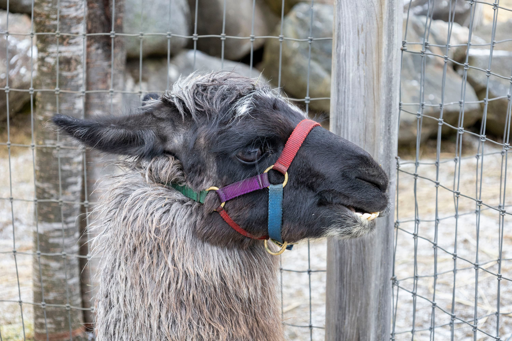
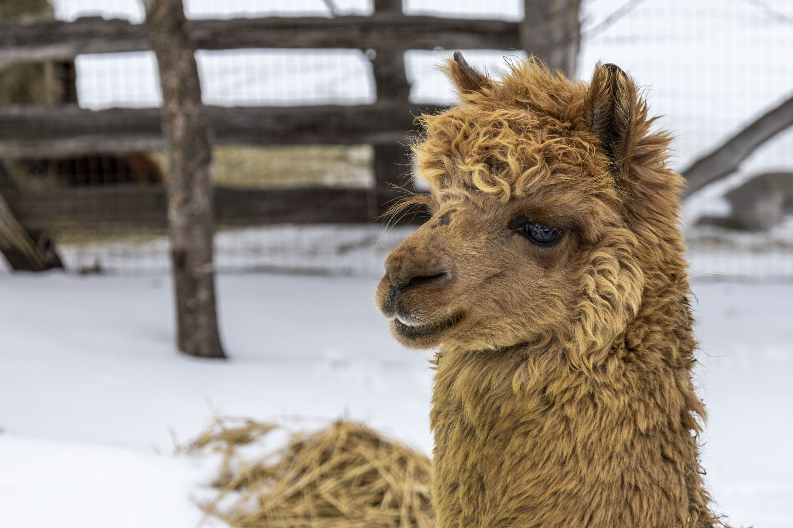
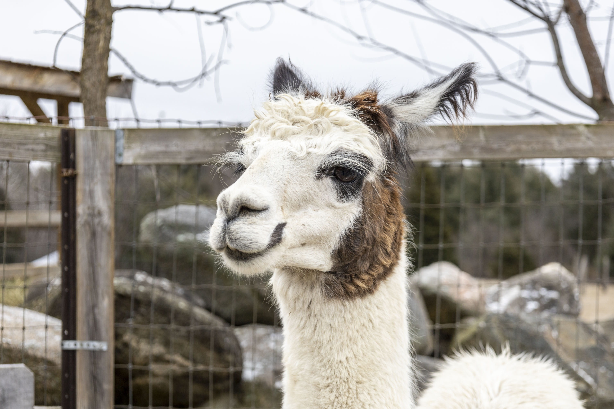

Our Mission
Dusty Toes exists to provide care and education for llamas and alpacas. We provide daily care, medical attention, and enrichment for a herd of South American camelids , many of them elderly or with special needs. Alongside their care, we share what we learn — about camelid behaviour, welfare, and the quiet good that comes from time spent with these gentle animals.
We are currently focusing on a herd of 60 llamas and alpacas in the Lanark Highlands. Some have lived on the farm all their lives; others came needing a new home — from places like Toronto’s High Park Zoo, the Waterloo Park Zoo, and nearby farms. The farm’s longtime owners are getting older and can no longer provide the standard of welfare they would want, and that is where we come in. We help with the daily care, the training, and the programming, while the animals stay in the home they know. It is a collaboration, and the owners take part as much as they are able.
Often when owners reach this moment in their lives, the decision to rehome is emotionally difficult — and it isn't what's best for them or the animals. This is the herd's home, and they have made friends within it. Rehoming would split them up. And where would they go?
We are working toward incorporating as a nonprofit, so we can care for this herd sustainably, for the rest of their lives.
Caring for the herd comes first — but it isn't all we imagine. As we grow, we hope to share these animals more widely: as teachers of camelid behaviour and welfare, and as partners in programs that connect people and animals for the good of both. That's the sanctuary we're building toward. Maybe a sanctuary isn't a place at all, but a movement.
Who We Are
Dusty Toes is a small, dedicated team. Our care is led day-to-day by Jacky, who manages the animals' feeding, health, and enrichment and works closely with our veterinarians, alongside a committed group of volunteers who show up week after week — for barn cleaning, shearing, pedicures, treks, and everything in between.
As we move toward nonprofit status, we're forming a board of directors drawn from people with the expertise a sanctuary needs — animal care, education, the arts, and community building. We'll introduce them here as the board takes shape.

Morning rounds, with supervision

Fresh from the spa — topknot optional
Dusty Toes Camelid Spa Team
We do shearing differently.
Shearing is normally a stressful experience for the animals. Professional shearers depend on speed — it's their livelihood, and they need to get through as many as they can, as fast as they can. That often means the llamas are shorn lying down, and the elderly and special-needs animals don't get the care they deserve.
That's where we come in. we provide shearing and pedicures at a gentler pace — using hand clippers when the situation calls for it, and electric shears otherwise. The animals are supported with soothing music and quiet conversation. Afterwards there are treats, and a gentle massage for anyone who wants one. We leave the young, healthy alpacas to the professionals — but we're glad to shear an elderly alpaca who needs a softer touch. As too the llamas we shear them standing up and work with a soft touch and support them through the process.
Meet the Herd
A few of the faces you'll get to know:
Currently we share the care of roughly 60 llamas and alpacas — around 33 alpacas and 27 llamas, ranging from youngsters to elders well into their twenties. A good number are seniors in our care for the rest of their days, which is exactly how we like it: no more breeding, no revolving door, just a herd growing older together.

Dusty
The one who started it all
At 18, Dusty is the matriarch of the trekking team — and the reason Dusty Toes exists. This whole nonprofit grew out of caring for her.
- Species
- Llama
- Age
- 18
- Favourite treat
- Apple slices
- Best friend
- Dolly
Will lead any trek… if apples are involved!

Perseus
A special-care resident
One of our alpacas with a health story to tell. We're working hard to keep him comfortable and thriving, one gentle day at a time.
- Species
- Alpaca
- Age
- 14
- Favourite treat
- Carrot coins
- Best friend
- Anne
Hums when he gets his toes trimmed

Noel
The youngest of the herd
At seven months, Noel is proof that a sanctuary is as much about beginnings as endings. His mum, Chewpaca (Chewy to her friends), arrived with her family from the Waterloo Park zoo in May 2025.
- Species
- Alpaca
- Age
- 7 months
- Favourite treat
- Fresh clover
- Best friend
- Domino
Never more than a step from Mum
Get Involved
We couldn't do this without help — and there's more than one way to give it.
Volunteer
Whether you can muck a barn, mend a fence, help on a trek, or lend a skill from home, there's a place for you here. We welcome volunteers of all abilities and backgrounds; caring for a herd takes every kind of hand.
Donate goods (In Kind Donations)
Goods are often seasonal. Keep an eye on our social media! We have put calls out for pools, pumpkins, radios (yes they love music), old blankets, gently used mini horse blankets. Although we work with a local hay and straw supplier we are always grateful for some extra to come our way.
Lead a third party event
If you have a specific skill you would like to share with a group, such as, yoga teacher, musician, a craft teacher (there is a lot of fiber to ‘play’ with), painting class contact us. We are open to suggestions. One requirement is that it is llama approved.
Donate funds
Donations are not currently tax-deductible. Every dollar you give goes directly to caring for the herd— from feed and hay, to pellets, supplements, and the veterinary care that comes with an aging herd. We're not yet a registered charity, so — but your support makes a real difference right now. Donations help us provide the care our animals need today while we work toward charitable status, which will allow us to grow our impact tomorrow.
We are proud to shop at Woolgrowers for their pellets, supplements, and medical supplies. Your donations help make these everyday essentials possible.
Join a fundraising campaign
From time to time we run raffles and fundraising campaigns for specific needs — a surgery, a winter's worth of hay. Follow along so you don't miss the next one.
Spread the word
Follow us on Facebook , share our story, and help more people discover the herd.